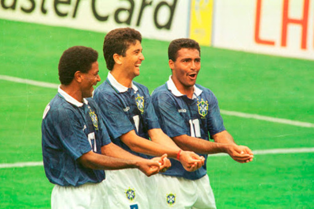

O Tetra nos Pênaltis
Após 24 anos sem títulos, o Brasil voltou ao topo na Copa do Mundo de 1994, nos Estados Unidos. Em uma final tensa contra a Itália, a decisão foi para os pênaltis, e o Brasil venceu por 3 a 2, com Roberto Baggio desperdiçando a cobrança decisiva.
Elenco

Taffarel, Jorginho, Aldair, Márcio Santos, Branco, Dunga, Mauro Silva, Mazinho, Zinho, Bebeto e Romário.
Goleadores

Romário (5 gols), Bebeto (3 gols), Branco (1 gol)